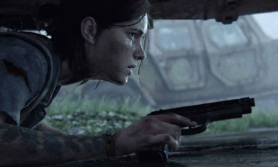
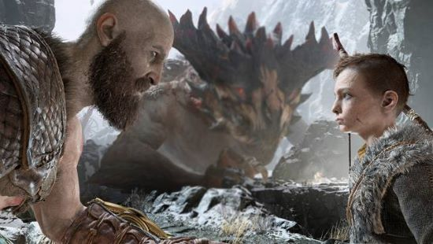
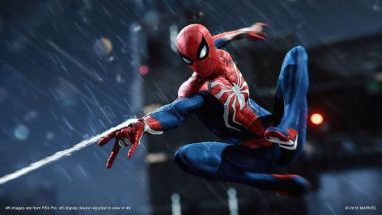
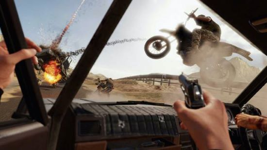
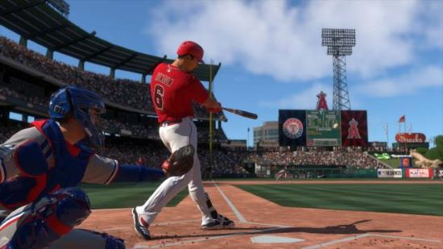
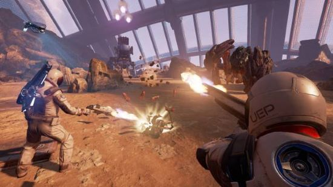

Estos son los 10 mejores estudios de Sony:
Naughty Dog
Empezamos por Naughty Dog porque son los próximos grandes protagonistas de este año. Con más de 450 empleados, la empresa capitaneada por Evan Wells amanece cada día en Santa Monica, California, con un gran legado a sus espaldas. Más de 30 años de juegos donde destacan propiedades intelectuales de largo recorrido; generalmente con más de una entrega por cada IP. A destacar, la saga Crash Bandicoot, Jak and Daxter, Uncharted o The Last of Us.
Sony Santa Monica Studio
Fundada en 1999, Sony Santa Monica ha ido creciendo con el paso de los años hasta su reciente cambio de estudio en la ciudad de Santa Monica. Lejos queda aquel Kinetica de 2001, cuando poco después entró en escena un nombre que forma parte del ADN de la compañía capitaneada por Shannon Studstill y Cory Barlog, este último en calidad de director de God of War. Es Kratos el emblema de este nombre y es esta licencia de la que esperamos algo más después del galardonado y celebrado God of War de 2018, un título que pudimos jugar en PS4.
Insomniac Games
Dicen que hay un momento clave en la historia de cada estudio de videojuegos donde se termina de alcanzar el estado de madurez. Insomniac Games no pertenecía a Sony hasta el pasado mes de agosto, momento en que un noviazgo que se llevaba consagrando desde finales de los noventa terminó por materializarse para que ese talentoso equipo liderado por Ted Price trabaje para PlayStation y solo para consolas PlayStation. A destacar, son ellos quienes crearon sagas como Spyro the Dragon, Ratchet and Clank, Resistance y el más reciente de todos, Marvel’s Spider-Man. Es del trepamuros del que se esperan novedades bien sea en PS4, donde se lanzó el primer título, o bien en la futura PS5.
Guerrilla Games
Dejamos la costa oeste de los Estados Unidos y aterrizamos en los Países Bajos, donde Guerrilla Games ha logrado elevar el listón durante esta generación hasta el punto de codearse con los tres de arriba. Las ventas hablan por sí solas, pero la calidad de su último título también lo hace. Tras su fundación el año 2000, los autores de Killzone y liderados por un Herman Hulst ascendido ahora a jefe de PlayStation Studios, pasaron a ser el pasado año un equipo de más de 400 trabajadores, un equipo que trabaja ya en su próximo proyecto tras ese Horizon: Zero Dawn que tan bien ha entendido lo que buscaban los jugadores.

Sony Bend Studio
Desde Oregon, Estados Unidos, encontramos a la compañía inicialmente conocida como Blank, Berlyn and Co. and Eidetic, un estudio fundado en 1993 que Sony quiso incorporar en sus filas allá por el año 2000, cuando pasó a llamarse como lo conocemos ahora: Sony Bend Studio. Syphon Filter sigue siendo su IP de mayor calado, pero su trabajo más reciente, Days Gone, no solo ha vendido muy bien sino que parece haber dejado las puertas a más. A falta de saber si lo que tienen ahora entre manos es una secuela u otra cosa, desde Sony Bend Studio ya trabajan en un nuevo juego AAA.
Sucker Punch Productions
Lejos queda aquel año 1997 cuando un pequeño grupo de jóvenes desarrolladores de Microsoft terminó fundando Sucker Punch Productions; un nombre en contra de la voluntad de la esposa de uno de los integrantes, como os explicamos en este especial. En el año 2000 Sony adquirió la empresa y, a partir de ahí, su currículo habla por sí solo, siempre en la escala del notable y esperando aún un verdadero golpe sobre la mesa que, quizá, esté a punto de llegar con el prometedor Ghost of Tsushima este mes de julio. Al margen de este, son los encargados de Sly Cooper e InFAMOUS.
Polyphony Digital
Polyphony Digital es sinónimo solo de una cosa: velocidad. Gran Turismo es su escudo, y queremos una Gran Turismo fuerte para la próxima generación. Con una saga que ha experimentado altibajos durante los últimos años, el legado de la licencia creada por Kazunori Yamauchi desde 1998 ha sido la responsable de que ese nombre haya acompañado a todas y cada una de las plataformas domésticas de PlayStation, sin excepción. Ya trabajan en algo nuevo, en un nuevo Gran Turismo. A falta de saber si es el séptimo título numerado o una versión ampliada de Gran Turismo Sport, se acerca el verde de los semáforos.

Sony London Studio
Aunque no lo parezca, Sony London Studio es también una de las veteranas, un equipo de cerca de cien personas afincado en el corazón de Inglaterra y que se ha encargado en el pasado de obras como This is Football, The Getaway, los EyeToy, SingStar o su obra más reciente, Blood & Truth, que sirvió también para acompañar a la primera gran remesa de juegos de PlayStation VR. Hace un tiempo conocimos que estaban buscando empleados para un nuevo AAA.
Sony San Diego
En Sony San Siego, también en California, se habla de deporte Se habla de béisbol o de lo que haga falta, pues en sus inicios, tras fundarse el año 2001, se encargaron incluso de obras con licencia de la NBA. Desde hace una década trabajan casi exclusivamente en MLB The Show, así que no nos arriesgaremos mucho al pensar que la próxima temporada volverán a golpear con el bate, que es lo que mejor se les da.
Sony San Mateo
Sony San Mateo es un caso particular. Fundada en 1998, este equipo californiano ha sido uno de los comodines de Sony a la hora de internacionalizar trabajo; un estudio encargado de colaborar en aquellos proyectos donde cualquiera de los anteriores necesitase ayuda. Por ejemplo, en Marvel’s Spider-Man, la serie Uncharted o la serie InFAMOUS son algunas de las participaciones de las que se tiene constancia. Si tendrán o no una oportunidad por sí mismos es algo que no sabemos.
